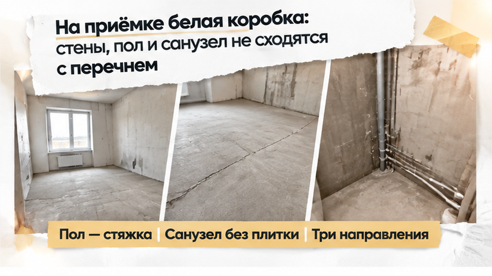
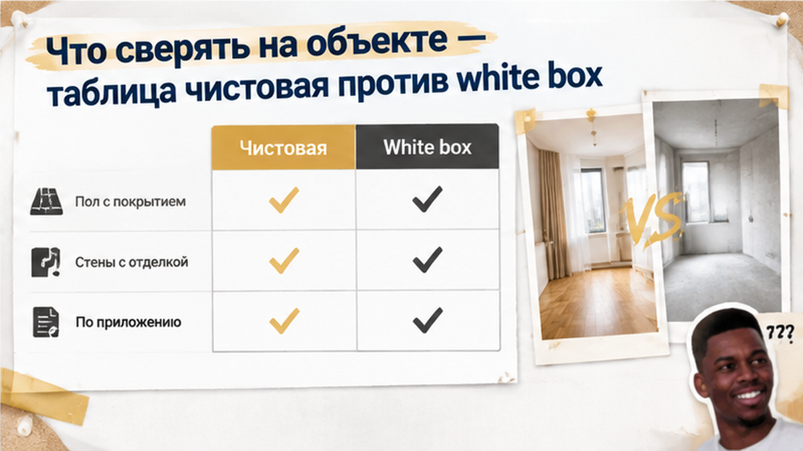

На приёмке новостройки в Тюмени семья обнаружила 3 расхождения с обещанной чистовой отделкой — и вместо подготовки к переезду пришлось решать, что подписывать. Родители с детьми рассчитывали получить квартиру для жизни, а не основу для отдельного ремонта. Причём финишные работы были не только в рекламных обещаниях: их перечислили в приложении к договору долевого участия — ДДУ. Поэтому вопрос «нам не нравится» здесь вообще не главный. Главный — как зафиксировать то, чего нет, прежде чем подпись подтвердит передачу квартиры.
Я Святослав Шакин, The Риэлтор, Тюмень. Рассказываю, как проверять обещания застройщика по документам и на объекте, без сложных слов. Разборы — в Telegram и MAX.
В рекламе — «под ключ». В офисе продаж — «можно заезжать». Покупатель слышит: получим квартиру, перевезём вещи, будем жить. Для семьи с детьми это ещё и понятный бытовой расчёт: не искать бригаду, не выбирать покрытия, не организовывать ремонт после получения ключей.
Но между фразой менеджера и обязательством застройщика есть документ. И вот его стоит открыть раньше, чем выбирать день переезда.
У слова «чистовая» нет единого федерального комплекта работ. Само название не гарантирует ни определённого покрытия, ни набора сантехники. Смотрим приложение к ДДУ, ведомость отделки, спецификацию с материалами и характеристиками. Если договор прямо отсылает к стандарту застройщика, читаем и его. Не только крупную надпись на картинке.
У этой семьи в приложении предусмотрены напольное покрытие, финиш стен, сантехника и межкомнатные двери. Значит, опора для разговора есть. Нужно проверить не сходство с шоурумом, а выполнение каждой указанной позиции — в том помещении, где она предусмотрена.
Обычный покупатель спрашивает: «Разве так выглядит готовая квартира?» Я бы начал иначе: «Открываем перечень. Что должны были сделать в этой комнате?» Первый вопрос легко увести в спор о вкусах. Второй требует ответа по существу.
С предметом договора похожая история была в разборе о кладовке, оплаченной по ДДУ, но отсутствовавшей на ключах. Объект спора другой, принцип тот же: сначала выясняем, что именно обязались передать.
В квартире сделана стяжка, выровнены стены, есть выводы электрики. Работа выполнена — отрицать её незачем. Такое состояние обычно называют предчистовой отделкой, white box или «белой коробкой». Состав здесь тоже определяет договор, а не английское название.
Для собственного ремонта это может быть удобной основой. Если покупатель именно основу и заказывал. Но подготовленная поверхность не становится финишной оттого, что выглядит аккуратно.
Здесь расхождения видны по трём направлениям. На стенах нет предусмотренных обоев или окраски. На полу — стяжка вместо указанного покрытия. В санузле отсутствуют плитка и установленная сантехника: выводы для подключения их не заменяют.
Это не спор о цвете стен. Это сверка выполненных работ с оплаченным перечнем. Фраза «зато всё ровно» может описывать качество подготовки, но не отвечает на вопрос об отсутствующем финише.
И здесь важно не уйти в другую крайность. Если нет покрытия на полу, это ещё не доказывает, что отсутствует всё остальное. Двери, смесители, плинтусы проверяют отдельно: предусмотрены ли они документами и что фактически установлено. Каждая комната — каждый пункт. Без догадок в обе стороны.
На этом месте разговор меняется. Вместо сверки перечня семье предлагают подписать передачу сейчас, а недостающие работы закончить потом.

Менеджер показывает на выполненную подготовку: стяжка есть, стены выровнены, электрика выведена. Предлагает: «Подпишите акт, доделаем в рабочем порядке». Звучит спокойно. Будто осталась небольшая формальность, а не предусмотренная договором отделка.
Но за столом с документами вопрос уже не в том, сколько строители успели сделать. Вопрос — что застройщик обязался передать вместе с квартирой. Подготовленное основание не заменяет покрытие, а обещание установить сантехнику не равно установленной сантехнике.
Покупателю хочется услышать: «Всё будет готово» — и наконец заняться переездом. Я бы в этот момент смотрел не на уверенность менеджера, а на бумагу перед покупателем. Передаточный акт подтверждает передачу квартиры. Акт осмотра фиксирует её состояние и расхождения. Это разные действия, хотя документы могут лежать рядом.
Устное «доделаем» не объясняет, какие работы закончат и когда. Особенно незачем подписывать «претензий не имею», если претензии есть и их можно сверить с приложением. Подпись не обнуляет автоматически все права покупателя. Но зачем самому создавать противоречие между состоянием квартиры и своим заявлением?
Так и появляется «бумажная чистовая»: обсуждают выполненную часть вместо всего обязательства. Похожий разрыв между обещанным и полученным я разбираю в истории, где ключи от новостройки перенесли, а деньги на эскроу остались заморожены. Предмет спора другой, принцип тот же: объяснение менеджера не заменяет исполнение договора.
Семья не подписала «чистый» передаточный акт. Вместо него составила акт осмотра — не с общей фразой «квартира не готова», а с конкретными расхождениями по приложению: нет финишного покрытия стен, не уложено напольное покрытие, в санузле отсутствуют плитка и установленная сантехника.
Состояние квартиры сняли на фото и видео, попросили экземпляр документа. Это уже не спор «нам обещали красивее». У каждого замечания появилась опора: пункт приложения и место в квартире, где работа не выполнена.
Представитель застройщика подписывать акт осмотра отказался. Семья оформила его односторонне и направила претензию заказным письмом. Отказ представителя — не повод уходить вообще без фиксации. При этом односторонний акт не становится бесспорным доказательством просто потому, что покупатель всё записал. Важна связка: замечание, обязательство по договору, фото или видео.
На этом день приёмки закончился. Спор — нет. Ключи формально не получены, вопрос об отделке остаётся открытым. Ни законченного ремонта, ни выплаченной компенсации пока нет. Зато семья сделала то, что зависело от неё: зафиксировала расхождения до подписи и не подтвердила отсутствие претензий. Не готовая победа, но понятная письменная позиция вместо надежды на «рабочий порядок».
Вы бы подписали акт с голыми стенами, если в ДДУ указана чистовая отделка?
Теперь недостающие работы нужно перевести в письменное требование. Не «мы недовольны квартирой», а: вот пункт приложения, вот что отсутствует, вот чего требуем от застройщика. Претензия — не продолжение разговора с менеджером. Это документ с конкретным требованием.
Статья 7 закона № 214-ФЗ предусматривает бесплатное устранение недостатков, соразмерное уменьшение цены или возмещение расходов на устранение. Покупателю хочется скорее закончить историю: «Давайте деньги, найду мастеров сам». Я бы сначала посчитал объём работ. И только потом выбирал вариант.
Для ДДУ, заключённых с 1 января 2025 года, совокупный размер денежных требований по недостаткам отделки ограничен 3% цены договора. Компенсации может не хватить, чтобы превратить подготовленные поверхности в обещанную готовую квартиру. Поэтому отдельно проверяют дату договора, состав требований и расчёт стоимости работ. При необходимости — с экспертизой. Обещать полную оплату ремонта нельзя; иногда практичнее требовать выполнения работ силами застройщика.
Со сроками — без смешения. По статье 8 приступить к приёмке нужно в срок из договора, а если он не установлен — в течение семи рабочих дней после уведомления о готовности. Исчезнуть и не отвечать застройщику — не способ защитить свою позицию.
Ориентир устранения недостатков в материалах на 2026 год — 60 календарных дней. Но это не разрешение на бессрочное «доделаем». С начала 2026 года временный мораторий 2024–2025 годов прекращён; денежные требования по существенным недостаткам вновь могут заявляться без обязательного ожидания 60 дней. Применимость этих правил нужно проверять по документам и дате договора.
Если представитель не подписывает акт осмотра, состояние фиксируют односторонне, по возможности со специалистом или свидетелями. Претензию отправляют заказным письмом с описью вложения. Свой экземпляр и подтверждения отправки сохраняют: важно подтвердить не только отправку письма, но и его содержание.
Акт осмотра описывает состояние квартиры, передаточный — подтверждает передачу. Один не заменяет другой. Я придерживаюсь того же порядка и когда застройщик предлагает подписать новый ДДУ: сначала читаем содержание, потом ставим подпись.
Обычный покупатель смотрит: «Похоже на готовую квартиру?» Профессиональная проверка начинается иначе: «Что здесь должно быть по подписанному перечню?» У названий отделки нет единого федерального комплекта работ. Таблица помогает увидеть разницу, но договор не заменяет.
Если ДДУ прямо ссылается на стандарт застройщика или ГОСТ Р 72509-2026, действующий с 1 марта 2026 года, учитывайте и его требования. Не по рекламной картинке, а по документу, на который ссылается ваш договор.
| Что смотрим | Чистовая — если предусмотрено приложением | Что может быть в white box |
|---|---|---|
| Пол | Уложено указанное покрытие | Стяжка без финишного покрытия |
| Стены | Обои или окраска по перечню | Подготовленная поверхность без финиша |
| Санузел | Плитка, установленная сантехника и смесители | Подготовка и выводы под сантехнику |
| Двери и мелкие элементы | Двери, плинтусы, розетки и выключатели по приложению | Состав зависит от договора; наличие нельзя предполагать |
| Материалы | Марка и класс соответствуют спецификации | Готовое основание не подтверждает наличие обещанного материала |
Замечание должно быть легко найти и проверить: помещение, место, отсутствующая работа, пункт приложения, номер фотографии. Общий снимок дополните крупным планом. На видео покажите расположение помещений, чтобы было понятно, где именно обнаружено расхождение.
До фиксации не начинайте собственный ремонт. Иначе подтвердить первоначальное состояние станет сложнее. Здесь важна вся цепочка документов — как и в ситуации, когда семейную ипотеку одобрили, а эскроу не открыли. Один пройденный этап ещё не подтверждает остальные.
Разборы документов и приёмки новостроек Тюмени публикую в Telegram и MAX. Сохраните нужный до поездки на объект: сверять по перечню надёжнее, чем вспоминать обещания у входной двери.

Выбирать новостройку можно спокойно, без ожидания подвоха в каждом углу. Семья в этой истории зафиксировала расхождения до подписи — это ещё не решённый спор, но уже документальная основа для требований. Ваша задача тоже не переспорить менеджера на месте. Она проще: понять, что вам обязались передать, проверить результат и не подтверждать на бумаге то, чего нет в квартире.